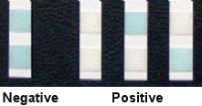
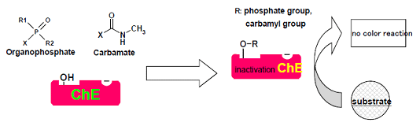
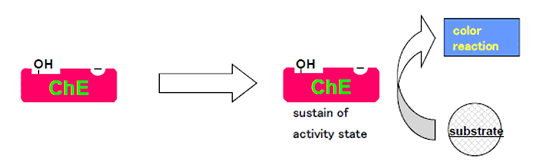
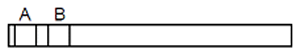
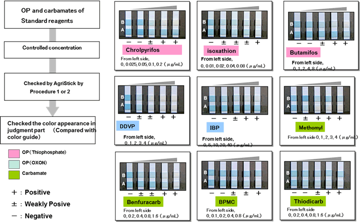
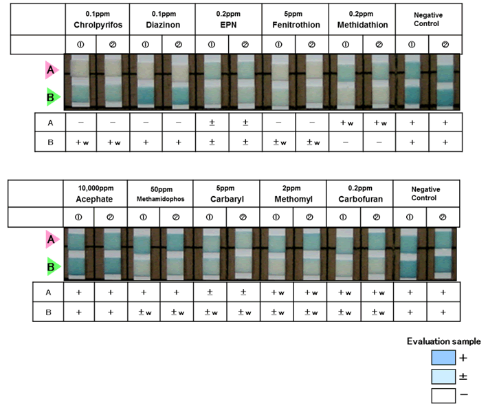
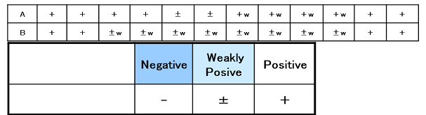
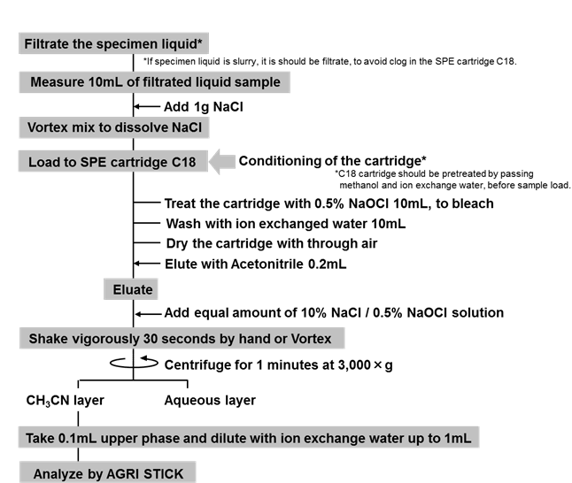

AGRI STICK
INTENDED USE
For use as a screening test that detection of major organophosphate and carbamate pesticide residues in agricultural products, soil and water. (It is possible to use for processing food, but it is necessary the extraction)
Feauture
- Easy of use :anyone, anytime, anywhere !
- Result in 5 minutes after sample extraction
- Eyes interpretation, easy to get result

- Simple peoicedure
- Unnecessary the special equipment and expertise.
- Low cost operation
Measurement principle
In case of containing OP & Carbamate

No containing OP & Carbamate

The kits has saturates with cholinesterase, an enzyme in most living organisms, except plants, which controls muscle performance.
Pesticide can inhibit an organism�fs ability to produce cholinesterase, and therefore kill organism.
If enough pesticide is present in the samples, it will inactivate the cholinesterase and color reacts white.
On the other hand, a blue color reaction indicates a negative result for the presence of pesticide.
Contact
AR Brown Co., Ltd�@Specialty Chemical dep
Agri Food safety FD-B team
Daini Marutaka Bldg., 13-8, Ginza 7-chome, Chuo-ku, Tokyo, 104-0061
TEL:81-3-3545-2881�@FAX:81-3-3543-8865�@E-mail
How to use Agri Stick
Movie 1: agricultural products
Movie 2: Processing food products

Movie 3: Surface of the sample by swab method
Procedure
1. Activation

(1) Add 1mL of the sample into Tube-1 (red tube).

(2) Cap and Shake the tube vigorously to disappear the white reagents attached the bottom and along the side in the tube.

(3) Wait 2 minutes with leaving to open the cap.
2. Enzyme Inhibition

(1) Dip Test Stick into Tube-1

(2) incubate 10 minutes at 25-30��C or room temperature.
3. Substrate Preparation
Prepare the substrate solution while waiting Enzyme Inhibition steps.

(1) Add 1mL of Color Reaction Liquid into Tube-3.

(2) Cap and shake the tube vigorously over the 30 seconds to form bubble.

Leave at rest with opening the cap.
* The choromogen disk keeps purple color and the substrate solution will not be colored.
4.Color Reaction

(1) After finishing Enzyme Inhibition steps, pick up Test Stick from Tube-1 and transfer to Tube-3.

(2) Set Test Stick into the tube and incubate 5 minutes at 25-30°C.
5. Read the Result
Pick up Test Stick from Tube-3 and read the color reaction result in the judgment parts.

(2) Set Test Stick into the tube and incubate 5 minutes at 25-30°C.
INTERPRETATION
Read result and compare the colors of the judgment parts A and B with color guide.
- The color appearance of the judgment parts will be varied by concentration of target pesticides. Any samples with detectable concentration of the pesticide will be reduced color. Any samples have no detectable concentration of the pesticide will develop a blue color.
- If the judgment parts either A or B is still white, read the result as + (positive).
- If both of the judgment parts A and B show the same blue color, read the result as �| (negative).
- If both of the judgment parts A and B show the different color tones, read the result on the faint color side.


| Color Tone | Evaluation | Result | ||
| A | B | A | B | |
| �| | �| | Negative | ||
| �} | �| | Weak Positive | ||
| + | �| | Positive | ||
| + | �} | Positive | ||
| �} | �} | Weak Positive | ||
| �} | + | Positive | ||
| �| | + | Positive | ||
| �| | �} | Weak Positive | ||
| + | + | Positive | ||
Procedure �U
Organophosphate and Carbamate
1. Enzyme Inhibition

(1) Add 1mL of the sample into Tube-2 (open-topped tube).

(2) Dip Test Stick into Tube-2 incubate 10 minutes at 25-30°C.

(3) Incubate 10 minutes at 25-30°C.
2. Substrate Preparation
Prepare the substrate solution while waiting Enzyme Inhibition steps.

(1) Add 1mL of the Color Reaction Liquid into Tube-3.

(2) Cap and shake the tube vigorously over the 30 seconds to form bubble.

(3) Leave at rest with opening the cap.
* The choromogen disk keeps purple color and the substrate solution will not be colored.
3. Color Reaction
Prepare the substrate solution while waiting Enzyme Inhibition steps.

(1) After finishing Enzyme Inhibition steps, pick up Test Stick from Tube-2 and transfer to Tube-3.

(2) Set Test Stick into the tube and incubate 5 minutes at 25-30°C.
INTERPRETATION
Read result and compare the colors of the judgment parts A and B with color guide.
- The color appearance of the judgment parts will be varied by concentration of target pesticides. Any samples with detectable concentration of the pesticide will be reduced color. Any samples have no detectable concentration of the pesticide will develop a blue color.
- If the judgment parts either A or B is still white, read the result as + (positive).
- If both of the judgment parts A and B show the same blue color, read the result as �| (negative).
- If both of the judgment parts A and B show the different color tones, read the result on the faint color side.
| Color Tone | Evaluation | Result | ||
| A | B | A | B | |
| �| | �| | Negative | ||
| �} | �| | Weak Positive | ||
| + | �| | Positive | ||
| + | �} | Positive | ||
| �} | �} | Weak Positive | ||
| �} | + | Positive | ||
| �| | + | Positive | ||
| �| | �} | Weak Positive | ||
| + | + | Positive | ||
DETECTION LIMITS
Followings summary is sensitivity of the AGRI STICK for various standard compounds tested.
| Group | Name | Detection limitted�ippm�j |
| Organothiophosphates (Thiophosphates) | Chrolpyrifos | 0.08 |
| Diazinon | 0.08 | |
| EPN | 0.15 | |
| MEP | 4 | |
| DMTP | 0.15 | |
| Marathion | 0.15 | |
| CYAP | 8 | |
| isoxathion | 0.06 | |
| PAP | 0.06 | |
| disulfoton | 15 | |
| Butamifos (herbicide�j | 0.3 | |
| Organothiophosphates�iOXON�j | Methamidophos | 40 |
| DDVP | 1.5 | |
| IBP�ibactericide �j | 15 | |
| Carbamate | NAC�iCarbaryl) | 4 |
| Methomyl | 1.5 | |
| Carbofuran | 0.15 | |
| Benfuracarb | 0.6 | |
| BPMC | 0.6 | |
| Thiodicarb | 0.6 |

Example of test result


Specification
| Product name | Agri Stick | |
| Code No. | AS-25 | |
| Composition | Test strip�@ | 25 pieces |
| Tube-1 (containing activator) | 25 red tubes | |
| Tube-2 (open-topped tube) | 25 tubes | |
| Tube-3 (containing chromogen) | 25 tubes | |
| Color Reaction Liquid | 28mL | |
| Disposable Pipette | 25 each | |
| Instruction | 1 | |
| Procedure manual | 1 | |
| intended use | FOR use as a screening test that detection of major organophosphate and carbamate pesticide residues in agricultural products, soil and water. | |
| Assay Principles | chemicals inhibit cholinesterase enzyme | |
| Time needed | Approx. 25 to 35minutes | |
| Storage condition | The kits should be store at 2-8°C | |
| Not provided, but materials required | Timer or Clock Pure water (for extraction), Plastic sealable bag In case of extraction processing food, please contact us or distributors. |
|
Sample Extraction
Agricultural products (vegetables, fruits)

(1) Collecting Place sample in a plastic sealable bag.�@Weigh bag containing sample and add an equal weight of water.

(2) Weigh bag containing sample and add an equal weight of water.

(3) Seal bag and shake gently over 1 min.

(4) Obtain test samples from the extract with disposable pipette and following operation; Please see TEST PROCEDURES
Processing Food

Beverage2 �gColored Liquid�h approximate time required 45 minutes
